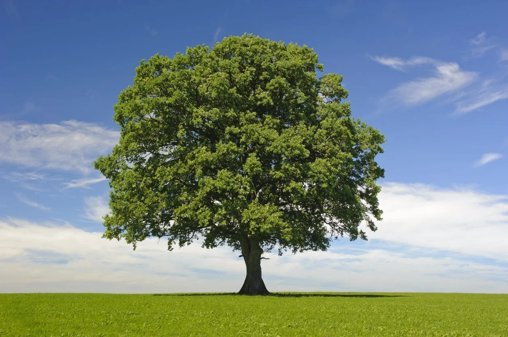

Hello! My name is Mario and I'm a second-year computer
science student. Of all the software development disciplines, I find frontend
development to be the most interesting. At the moment I am tailoring my coursework to cover the type of
work that a frontend developer would do. In my free time, I enjoy going out with my friends,
playing video games, and reading books.

Project 1: Course Jump Page
Due: Feb 14
Your course jump page will function as a landing page for
the complete work of this course. The page must clearly display
your personal intro, and the details for each project
and practice lab.
Project 2: Photo Gallery
Due: Mar 9
Create an image gallery with no less than 10 images.
The UI should function in a progressively enhanced manner.
Your gallery layout remains attractive and accessible
with JavaScript turned off.
Project 3: Dynamic Media Player
Due: Apr 13
This project focuses on the presentation of rich media such as
audio and video. What makes this assignment different from a
typical audio or video web player is the media will be used to
control the UI to augment the content of the rich media.
Project 4: Web App
Due: May 19
This assignment is part of an unpublished module and is not available yet.
Lab 1: Layout
Make a copy of the review assignment folder and add the page layout features
defined in your previous defined page sketch. Use Flexbox and CSS Grid to
create the page layout. The page should remain responsive, and the design
should not suffer through resizing.
Lab 2: CSS Transitions and Animation
Your assignment will focus on practicing the use of CSS transition and
@keyframe animations. Use your Jump Page as the source for this practice lab.
Lab 3: Mouse Events
For this exercise we create a new webpage from scratch. It will focus on mouse
events, but we will discuss other types of event types as well.
Lab 4: Changing the DOM
Our first large project will be to create a custom image gallery. Before we can
create that project, we need to understand how to use JavaScript to dynamically
change what the viewer can see.
Lab 5: Audio and Video
The third project in this class is to create a rich media player.
This media player will not only play audio and/or video files,
it will also use those media files as a catalyst to enact change on
the web page itself.
Lab 6: Fetch
In the first part of this lab, you will enhance the output of the forEach
method to be proper semantic html with classes for CSS hooks. In this second part,
you will write the code necessary to fetch a random color from this
free and open API.
Lab 7: Fun and Remote APIs
Find at least two free APIs that have both clear documentation and
interesting data. Following the documentation for the APIs, create a web
page that displays data from each API in a way that makes sense and ideally
connects each data set together in an interesting way.
Lab 8: Local Storage
Using the previous Lab assignment (Lab 6: Fun with APIs) as a starting point. Store
the fetched data in the browser so that your mini-app will still function
in a limited way.